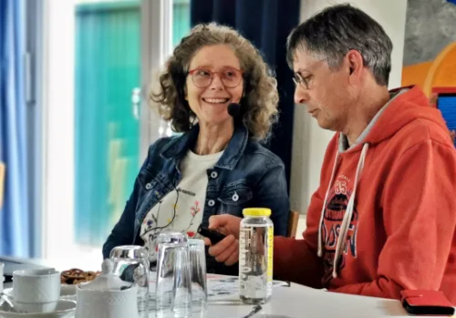

Vortrag “Lass es wachsen“ in der Alten Feuerwehr Amshausen
Zu einem gemütlichen Nachmittag bei Kaffee und Plätzchen samt einem spannenden Vortrag hatte der Verein zur Förderung der Umwelt- und Lebensqualität Steinhagen e.V. eingeladen.
Ingold Klee, Elektroingenieur und Mitglied des BUND Gütersloh nahm die ca. 35 Besucher zu Beginn mit auf einen kurzen, faszinierenden Ausflug in das Leben der Wildbienen.
Wundervolle Fotos aus dem eigenen Garten untermalten seine Ausführungen und verdeutlichten den Nutzen der Insekten. Eindringlich führte er vor Augen, wie sehr diese in einer Welt aus industrieller Landwirtschaft und sterilen Vorgärten um ihr Überleben kämpfen müssen. Viele, der ca. 360 Wildbienenarten, stehen bereits heute auf der Roten Liste, da ihnen durch den Verlust von Blühflächen Nahrung und Nistplätze fehlen.
Er plädierte dafür, dass jeder Einzelne aktiv zum Insektenschutz beitragen könne. Bereits kleine Maßnahmen seien wirkungsvoll: Man könne bewusst etwas Unordnung im Garten zulassen, Nisthilfen für Wildbienen anbringen oder den im Herbst anfallenden Strauchschnitt als Unterschlupf liegenlassen. So beendete er seinen Vortrag mit den Worten: „Da der Großteil der Wildbienen im Erdboden nistet, können Sie ihnen mit einem sonnigen, vegetationsfreien Platz im Beet eine große Freude machen.“

Anette und Ingolf Klee | Foto: Detlef Lippek
Der zweite Teil widmete sich dann dem eigentlichen Thema: dem „Wachsen lassen“. Anette Klee, begeisterte Radfahrerin und „Klimapoetin“, sowie Vorstandsmitglied der BUND-Kreisgruppe, die selbst mit einem klassisch durchgestalteten Garten voller bunter Blumen und akkurater Nadelhölzer aufgewachsen ist, berichtet von ihrem persönlichen Umdenken.
In ihrem Vortrag nimmt sie das Publikum mit auf den Weg vom traditionellen Ziergarten hin zu einer ökologischen, bewusst wilderen Naturoase.
So erklärte sie, dass mehr Artenvielfalt ganz einfach gelingen kann. Besonders heimische Pflanzen wachsen lassen, seltener mähen und auf
Dünger sowie Mulch verzichten, ist ein toller Anfang. Allein 112 Wildbienenarten, 63 Raupen und ca. 40 Schwebfliegen ernähren sich vom so
oft ungeliebten Löwenzahn.
Die Wiesenflockenblume, der gewöhnliche Natternkopf, Oregano, Wasserdost und auch die Brennnessel sind wichtige Futterpflanzen für unsere Insekten.
Selbst im kleinsten Garten ist Platz für ein Stück unberührte Natur.
Text: Sabine Wienstroeer, 1. Vorsitzende